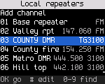
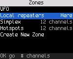
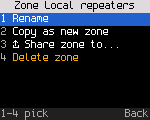
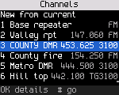
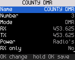
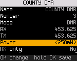
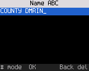
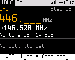
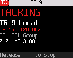

信道、区域与 VFO
信道是保存下来的频率及其模式（FM 或 DMR）和设置。区域是带名称的信道列表。VFO 可手动调谐任何频率。信道和区域来自电台频率（为电台编程）。
切换信道
- 转动信道旋钮，或在主屏幕按 上 或 下，在区域的信道间切换。
- 在主屏幕输入信道的位置并按 OK。例如 1、2、OK 会转到区域的第 12 个信道。
- 在主屏幕输入信道名称的字母（见查找），并在该项上按 OK。
- 按 OK、4（区域），聚焦区域并按 #。该区域的信道会打开。聚焦一个信道并按 OK。

切换信道会结束临时更改、回复窗口、数字监听和扫描。
切换区域
- 按 下一区域 或 上一区域（按键角色显示你的电台上对应哪些键）。电台显示“区域：”和名称。
- 或按 OK、4（区域）。列表打开时当前区域处于焦点（“在”）。聚焦另一个区域并按 OK。电台切换过去并返回主屏幕。
- 或在主屏幕输入区域名称。查找也会列出区域。

区域列表先显示 VFO，然后是每个区域及其信道数。输入字母可筛选。
新建区域
OK、4（区域），然后最后一行新建区域。输入名称并按 OK。电台会保存空区域并在列表中聚焦它。按 # 打开它，再用添加信道添加信道。信道自己的页面也可把它放入区域（区域 行，编辑信道）。
编辑区域
区域列表（OK、4，聚焦区域，#）也可编辑区域。每项更改会立即保存：没有需要保存或放弃的内容。在没有 # 的键的键台上，本节说 # 的地方请长按 OK。

-
添加信道（第一行）列出区域中没有的每个信道。输入字母或数字筛选，并在一个信道上按 OK。它会插到你当前所在信道之后；若你不在该区域中，则加在末尾。
-
在信道上按 # 打开其操作：
-
区域选项（最后一行）：
按键 操作 作用 1 重命名 输入新名称并按 OK 2 复制为新区域 用相同信道新建区域，名称加上“ 2” 3 共享区域至…… 把区域发送到另一台电台或某个通话组（共享区域） 4 删除区域 先询问，焦点在“不，保留”。区域中的信道仍保留在“信道”中

移动、添加和移除都会让电台保持在其信道上。移除当前所在信道时，电台会转到区域中的下一个信道。一个区域只能包含某个信道一次，超过区域大小会被拒绝（“区域已满”）。电台频率中没有区域的电台会显示一个名为“所有信道”的区域；第一次更改会将它保存为真实区域。
删除当前使用的区域时，电台会转到列表中它后面的区域（若它是最后一个，则转到前一个）。双守候在另一个区域仍包含该信道时继续守候来自已删除区域的信道，否则停止。标记为漫游的区域在删除后失去标记；其他标记仍保留在各自区域上。
共享区域
你可以通过 DMR 把一个区域或一个信道发送到另一台电台或某个通话组。状态：发送单个信道已在电台上验证；发送整个区域和接收目前只在主机测试中验证过。
发送：
- 调到一个 DMR 信道。区域会从该信道发出。
- 按 OK、4（区域）。聚焦区域并按 #。其信道会打开。
- 发送单个信道：在其上按 # 并选择 5 共享信道至……，或在信道设置中选择共享信道至……。发送整个区域：选择区域选项（最后一行），再选 3 共享区域至……。
- 选择联系人或通话组并按 OK。对于不是联系人的台站，输入其 ID：“私密 ID ……”和“TG ……”会出现在联系人下方。电台会说明发送去向：“经 442.375 发送至……”（在中继台上为其输出频率）。发出后横幅显示“已发送至……”。
一次发送放不下的区域会分批发送，电台会说明发送了多少（“正在发送 60 个信道中的 40 个”）。扫描列表、组列表和加密密钥绝不会被发送。
接收： 设置 > 连接 > 接受区域共享初始为开。在你确认之前不会导入任何内容。设为关可忽略他人发来的内容。

- 横幅显示“来自……的区域”。它会保留到你按 # 打开或按 返回 隐藏。该提议也会在工具 > 已收区域/信道下等待 10 分钟。屏幕标题为收到区域共享，单个信道时为收到信道共享。
- 提议会显示区域名称、其信道、发送者，以及有多少信道超出你电台的频段。
- 选择预览查看信道，选择导入添加它们，或选择拒绝。
导入会做什么：
- 区域会加在你的区域之后。若你已有同名区域，新区域名称加上“ 2”。
- 只有你电台能接收的信道会被导入。每个都设为仅接收：确认可以使用后，再逐个信道打开发射。
- 你已有的通话组和联系人会沿用你的名称。缺少的会被添加。
- 同一台电台再次发送同一区域时，会更新你的副本，而不是再加一个。它只替换上次导入中你未改动的信道。你添加到该区域或修改过的信道会保留，排在新信道之后。
- 单个信道会加入你选择的区域。
每小时最多显示 6 个提议，一次一个。格式见 zone-share.md。
所有信道
OK、5（信道）按编号和名称列出电台频率中的每个信道，无论它属于哪些区域。每行末尾显示接收频率和通话组（DMR）或 FM。名称较长时保留完整名称，其余部分缩短：“TG”先省略，然后是频率。当前所在信道会被标记。输入字母可筛选列表。

- 在信道上按 OK 打开其设置，可在其中更改（见下文）。
- 在列表中按 # 转到该信道：若当前区域包含它，则在该区域；否则在第一个包含它的区域。不属于任何区域的信道会显示“不在任何区域：请先加入区域”。
- 第一行用当前新建会基于电台当前使用的设置新建信道（见下文）。
编辑信道
信道页面列出所有设置：名称、模式、收发频率、功率、仅接收，然后是 FM 的带宽、亚音和 VOX，或 DMR 的色码、时隙、发射联系人、接收组列表、本台 ID、直通模式、允许发射提示音和通话者别名，然后是发射超时、扫描、省电以及包含它的区域。列表可滚动。

聚焦一行并按 OK：
| 行 | 按 OK 的作用 |
|---|---|
| 两个选项（模式、时隙、带宽、仅接收、扫描、VOX、直通模式、提示音、通话者别名、省电） | 切换到另一个 |
| 功率、接收 CTCSS/DCS、发射 CTCSS/DCS、色码、发射超时 | 打开选择器：转动旋钮（或上下键）选值，OK 保留，返回 取消。色码和超时也可直接输入数字 |
| 接收 CTCSS/DCS、发射 CTCSS/DCS，输入 | 输入带十分位的 CTCSS 亚音：8 8 5 是 88.5，1 3 1 8 是 131.8。小于 60 时数字为整赫兹：6 7 是 67.0，1 0 0 是 100.0。以 0 开头输入 DCS 码：0 2 3 是 D023N。返回 收回最后一位。反相 DCS 码请转动旋钮一格：每个码的 I 紧随其 N（D023N、D023I、D025N） |
| 区域 | 打开所有区域，信道所在处标记“在”。OK 把信道加入或移出区域，立即保存。新建信道在保存后才显示该行 |
| 接收、发射、本台 ID | 输入数字，OK 保留，返回 收回最后一位。超出电台频段的数字在输入时会被拒绝。新的接收频率会带着发射频率一起移动，因此中继台保持其偏移。若新的接收频率在另一频段（UHF 转 VHF），或发射会落到频段外，发射频率会设为新的接收频率 |
| 名称 | 打开文本输入（见下文） |
| 发射联系人、接收组列表 | 打开联系人列表或组列表；输入字母查找 |

更改过的行会被标记，直到保存。在页面任意处长按 OK 保存，或选择保存行。电台会在后台写入信道并显示“已保存信道 3”。有未保存更改时按 返回 会询问是否放弃；回答默认在“不，继续编辑”。保存任何信道都会丢弃当前信道的快速设置更改：电台会从电台频率重新加载它。
电台不会保存以下信道：没有名称、接收频率超出频段、发射频率无法发射（应改为仅接收），或 DMR 信道没有发射联系人。它会说明是哪一种。
存为新信道会把编辑后的副本存到最小空闲编号，原信道保持不变。调到本信道会调到该信道，**共享信道至……**会把它发送到另一台电台（共享区域）；请先保存或放弃更改。
文本输入
用法类似手机键盘。2 到 9 依次输入字母、数字，然后再输入另一大小写的字母：按 2 一次为 A，两次为 B，四次为 2，五次为 a。一秒内再次按同一键输入下一个字符；按其他键或稍停即可前进。1 输入标点（. - / , ' & ( ) @ _ ! ? 和 1），0 输入空格、0、+、# 和 *。标题显示当前模式。
# 切换模式：ABC（大写，初始），然后 123（每个键输入其数字），然后 abc（小写），再回到 ABC。任何模式下长按数字键都会输入该数字。返回 删除最后一个字符（* 也是）。OK 保留名称。若不修改就离开，请按 返回 直到字段为空，再按一次。名称最多 16 个字符。
在没有键盘的键台上，上/下更改最后一个字符，OK 添加下一个，长按 OK 保留名称。

用当前设置新建信道
OK、5，然后第一行用当前新建。它会以最小空闲信道编号打开当前信道的未保存副本（含快速设置更改），或 VFO 的副本。名称加上“ 2”（来自 VFO 时则用频率）。修改不同之处，然后长按 OK 保存。新信道还不属于任何区域：在区域列表中用添加信道加入（编辑区域），或用那里的复制到此处一步完成复制和添加。
保存对信道的更改
用快速设置更改功率、静噪、亚音、带宽、时隙、色码或模式。然后在主屏幕或快速设置中长按 OK。电台会在后台写入信道并显示“已保存到信道”。静噪保存为电台的默认静噪，而不是保存在信道中。
保存失败会显示“无法保存：……”，更改仅临时保留。
VFO
VFO 是 FM VFO，或在支持 DMR 的电台上是 DMR VFO。它像频率一样保留自己的模式。你在 VFO 中所做的一切更改（模式、色码、时隙、通话目标）都会保留，包括转到信道再回来之后，以及重启之后。
- OK、4（区域）。VFO 是第一行。
- 按 OK。主屏幕会以大号字显示频率，电台提示“VFO：请输入频率”。

把信道复制到 VFO
要从某个信道开始，在其上按 *、4（“到 VFO”）。该信道的设置会成为 VFO 的设置，主屏幕显示 VFO（“已复制到 VFO”）。有 VFO/MR 键的电台可改成长按该键。设置 > 按键可给任何侧键分配“复制到 VFO”，短按或长按皆可。
| 复制的内容 | 说明 |
|---|---|
| 接收和发射频率 | 中继台偏移会保留，直到你步进频率 |
| 模式、带宽、功率 | 若信道的功率为“默认”，功率保持“默认” |
| 亚音（FM） | CTCSS 或 DCS，收发都复制 |
| 色码、时隙、通话目标（DMR） | 通话目标是联系人的 ID，作为组呼或私密呼叫。没有联系人的信道会给出它当前会发送的目标 |
- VFO 取得当前生效的设置，因此你在信道上所做的临时更改（带宽、功率级别、通话目标）也会被复制。
- 信道保持原样。VFO 像保存其他设置一样保存这些值，重启后也保留。
- 不复制：接收组列表、加密密钥、漫游、数据和紧急设置，以及静噪级别。VFO 对这些使用电台自身的值。
- VFO 无法容纳的信道会被拒绝并给出简短提示，什么都不会改变：例如 DMR 信道复制到 VFO 仅支持 FM 的电台构建（或相反），或频率超出电台频段。
- 在 VFO 中按同一键会显示“已在 VFO 中”。
输入频率
在主屏幕的 VFO 中，从百兆赫兹开始输入频率数字，不带小数点。电台会随输入显示。
| 按键 | 频率 |
|---|---|
| 4 4 6 0 0 0 | 446.000 MHz |
| 1 4 6 5 2 | 146.520 MHz |
| 4 6 1 8 6 2 5 | 461.8625 MHz |
| 0 8 8 1 | 88.100 MHz（低于 100 MHz 时以 0 开头） |
- 至少输入三位 MHz 数字，然后按 OK（或电台有该键时按 #）调谐。
- 返回 删除最后一位数字。
- 无法形成电台频段内频率的数字会被拒绝，电台会显示这些频段。频段取决于电台（电台参考）。
- 最多八位数字（10 Hz）。10 秒无按键后，输入会被丢弃。

步进
上、下 和信道旋钮按步进更改 VFO 频率。步进为 设置 > 通话 > VFO 步进。默认值自动随带宽变化：25K 时（以及 AM 中）为 25 kHz，12.5K 时为 12.5 kHz，广播频段中为调频广播步进。步进显示在状态条中。
分离（中继台偏移）
在 VFO 中，*、5（DMR VFO 中为 *、6）是发射频率（分离）：发射相对接收，“关”或偏移（“+600k”、“-5M”）。

-
上 和 下 立即在频段的常用偏移间步进。上 为 +，下 为 -，最常用的在前，并在最后一个处停止：
频段 偏移 2 m（低于 200 MHz） 600 kHz，然后 1 MHz 1.25 m（200-300 MHz） 1.6 MHz 70 cm（高于 300 MHz） 5 MHz，然后 7.6 MHz，然后 1.6 MHz 在 70 cm 上，从“关”按 上 为 +5M，再按为 +7.6M，再按为 +1.6M；从 +5M 按 下 回到“关”，再按为 -5M。
-
底行说明按键作用（“上下 +/- 0-9 发射频率”），输入时会显示到目前为止的完整发射频率（“发射 147.02___”）。
-
其他分离（自定义）：像输入 VFO 频率一样输入发射频率（1 4 7 0 0 是 147.000），然后按 OK。返回 收回最后一位。电台能发射的任何频率都会被接受。
-
新的接收频率会在同一频段内保持偏移。移到另一频段（例如 UHF 转 VHF）会使 VFO 变为单工。
-
监听在 VFO 中仍在其按键上，加密只用于信道。
-
主屏幕显示发射频率：FM 上位于 PTT→ 之后；DMR 上位于顶行（“TX 147.120”），没有该行的显示屏则显示在功率旁的偏移。发射时大号频率会变红并显示发射频率（DMR 上呼叫屏幕有“TX”行）。

VFO 中的 DMR
在 VFO 中按 *、4 可在同一频率上于 FM 和 DMR 之间切换（“VFO：DMR”）。DMR 中的快速设置为 DMR 的那组：
| 按键 | 磁贴 | 在 DMR VFO 中的作用 |
|---|---|---|
| 2 | 时隙 | 切换时隙，1 或 2 |
| 3 | 颜色 | 设置色码，0 到 15（初始为 1）。输入或使用 上、下，然后 OK |
| 8 | 通话对象 | 选择或输入通话目标，通话组或个人。OK 和长按 OK 都会为 VFO 保留它 |

- 选择你所用中继台或单工频率的色码和时隙。在你选择其他目标之前，电台使用你自己的 DMR ID 与通话组 9 通话。
- VFO 没有收听列表。它会播放发往其通话目标的呼叫、所有呼叫以及发给你的私密呼叫。其他通话组显示为“其他通话组：不播放”。要收听时隙上的一切，请开启数字监听。
- 主屏幕显示频率、通话目标、时隙和色码。此处的更改不显示圆点，返回 也不会撤销它们。
- DMR VFO 可以发送数据消息并可以发起紧急呼叫，与 DMR 信道相同。它不发送通话者别名。

离开 VFO
按 OK、4，然后在 VFO 行上再按 OK（“返回信道”）。或选择一个区域或信道。
航空波段与调频广播
有些电台还能以 AM 接收航空波段，并接收调频广播电台（电台参考）。无需选择模式，也没有菜单：频率决定一切。
| 调到 | 听到 |
|---|---|
| 108 到 137 MHz | 航空波段，AM。主屏幕显示“航空波段 AM”和静噪级别，并用“AM”代替“FM” |
| 广播频段（多数接收机为 65 到 108 MHz） | 调频广播，由电台的广播接收机播放。主屏幕显示“广播 FM” |
在 VFO 中调到那里（输入 1 1 8 1，或 0 8 8 1，然后按 OK）。DMR VFO 在那里会切换到 FM 并保持 FM；这些频段中无法选择 DMR。要保留一个电台，请在信道列表中使用用当前新建（或在信道编辑器中输入接收频率）：信道会变为 FM 且仅接收，可直接保存。电台频率中在该频率上编程的信道也可用，即使保存为 DMR。两个频段都仅接收：PTT 会显示“航空波段：仅接收”或“广播：仅接收”，电台不会发射。亚音会被忽略。
在电台频率编辑器中，接收频率位于这些频段的信道会在你输入频率时被设为仅接收，其发射频率跟随接收频率，模式显示为“AM（航空波段）”或“调频广播”。问题列表会警告该处不是仅接收或是 DMR 的信道。
在航空波段中，静噪与任何 FM 信道一样工作。广播电台无论静噪级别如何都会播放，因此衰落的电台不会被切断，屏幕和 LED 会显示正在接收。静噪只在扫描时用于停止在某个电台上：扫描运行时，广播频段在各电台之间是安静的。
在广播频段中，旋钮和 上 / 下 步进 200 kHz，落在奇数十分位（88.1、88.3……107.9），这是美洲电台所在的位置。要 100 kHz 步进，请把设置 > 通话与收听 > 调频广播步进设为 100 kHz。无论哪种方式，都可以输入任何频率，例如 90.2。航空波段中自动步进为 25 kHz；窄信道请把 VFO 步进设为 8.33 kHz。
电台无法使用的信道
超出电台频段的信道不会发射（“超出……”）。仅接收信道的通话目标显示“仅接收”。